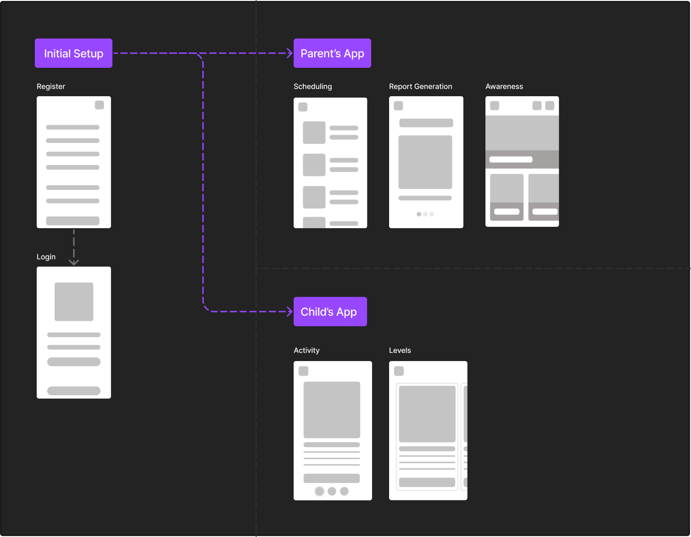

Children with Down Syndrome are commonly known for the genetic disorder that is due to the existence of an extra copy of chromosome 21. These children suffer from both medical and physical impairment, however, the degree of impairment may vary for each child.
As a design researcher, my goal was to highlight issues and limitations of eductional tools for children with down syndrome and drive out user needs by providing a hypothetical solution.
The process used a qualitative research method. Therefore, we developed a 19 questions questionnaire, proofread by the research supervisor for authentication, and then taken to the Karachi Down Syndrome Program (KDSP), where we conducted interviews.
Following are some key takeaways from the interviews
Medical Issues
Medical problems associated with Down syndrome can vary widely from child to child. While some kids and teens need a lot of medical attention, others lead healthy lives. Students with Down syndrome may: need to go to the school nurse for medications when necessary, miss class time due to frequent doctor visits.
Additional Assistance
The respondents also reported that children with Down Syndrome need visual and auditory accommodations for classroom instruction, require physical, occupational, and speech therapies, need extra time and assistance with classwork and require therapeutic staff support in the classroom.
Parents' Involvement
According to our research at KDSP, many teacher showed concerns for the lack of parents' involvement in the learning process of their child. They stated that if parents were more involved alongside teachers, learning could be much faster.
In order to understand the current landscape of eductional tools for the children, we also conducted a market research.
A tool called MathDS Math Down Syndrome was developed in two different languages, Malay, and English, to favor children with Down Syndrome. It has three different features: Learning, Activities, and Practice. Through this application, children can learn at their own pace. WAVE is another free tool available that provides evaluators with the accessibility of web pages (WEBAIM, 2001). It is an application that provides resources to users like courses and course material. Students with disabilities can learn these courses at their own pace easily.
How can we build an easy-to-use intuitive online learning platform to help children with down syndrome?
User Persona
To understand our users better, we divided them into two groups to focus on their individual needs. Below I've highlighted the major characteristics of both of our user groups.
System Overview
To get a big picture of all the functionalities of our system, we created a system diagram.
To get a big picture of all the functionalities of our system, we created a system diagram.